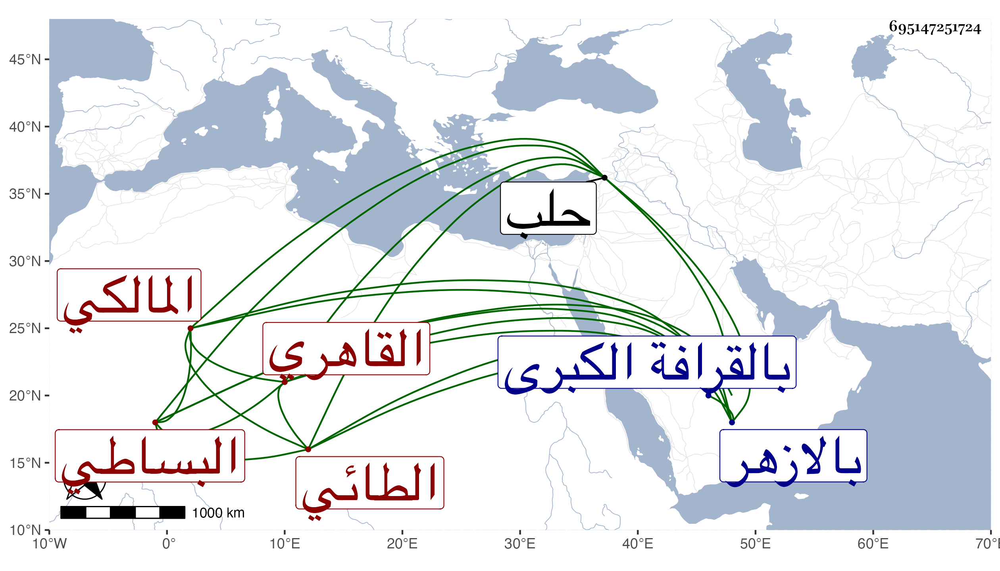

0902Sakhawi.DawLamic.ITO20230111-ara1.EIS1600.695147251724
Biography ID: 695147251724
1189
يوسف بن خلد بن نعيم بن مقدم بن محمد بن حسن بن غانم أو عليم بن محمد بن علي الجمال أبو المحاسن الطائي البساطي القاهري المالكي ابن عم الشمس البساطي الشهير ووالد العز محمد الماضيين. ولد في حدود الأربعين وسبعمائة وتفقه بأخيه العلم سليمان وشيخ المذهب خليل بن إسحق ويحيى الرهوني وابن مرزوق ونور الدين الحلاوي وعن السراج عمر بن عادل الحنبلي أخذ العربية والحساب وعن الكلائي الفرائض في آخرين كالتاج القروي وبرع في فنون وناب في الحكم عن أخيه فمن بعده إلى أن انجمع عن ابن خلدون ثم سعى عليه فاستقل به في رجب سنة أربع وثمانمائة وتكرر عوده إليه بعد صرفه إما به أو بغيره وآخر ما ولي الحسبة ثلاثة أشهر من سنة ثلاث وعشرين أو التي بعدها ، ودرس بالمؤيدية وغيرها ، وكان كما قال الجمال البشبيشي فاضلا في علوم شرح مختصر الشيخ خليل والبردة وبانت سعاد والقصيدة الفلكية في الألغاز الفرضية وله أيضا محاضرة خواص البرية في الألغاز الفقهية ونظم ونثر وأفرد جزءا في شرح قوله في بانت سعاد حرف أخوها أبوها من مهجنة وعمها خالها وتصوير ذلك في الآدميين سماه الإفصاح والإرشاد وشرح ألفية ابن ملك وأعرب من الطارقية إلى آخر القرآن . قال العيني كان عارفا بصناعة القضاء غير أنه لم يكن مشكورا فيه ولا كان متقدما في معرفة مذهبه ولا غيره من العلوم كذا قال . مات في يوم الاثنين العشرين من جمادى الآخرة سنة تسع وعشرين فجأة يقال أنه سقط من سلم سطوح عن ثمان وثمانين سنة وصلى عليه بالازهر ودفن بالقرافة الكبرى بجانب قبر أخيه شرفى ... أبي العباس الحرار رحمه الله وإيانا . وقد ذكره ابن خطيب الناصرية مقتصرا على اسمه واسم أبيه ولم يترجمه وكأنه دخل حلب في قضائه ، وكذا أغفله شيخنا في إنبائه وذكره في رفع الأصر , والمقريزي في عقوده وأثنى عليه .
